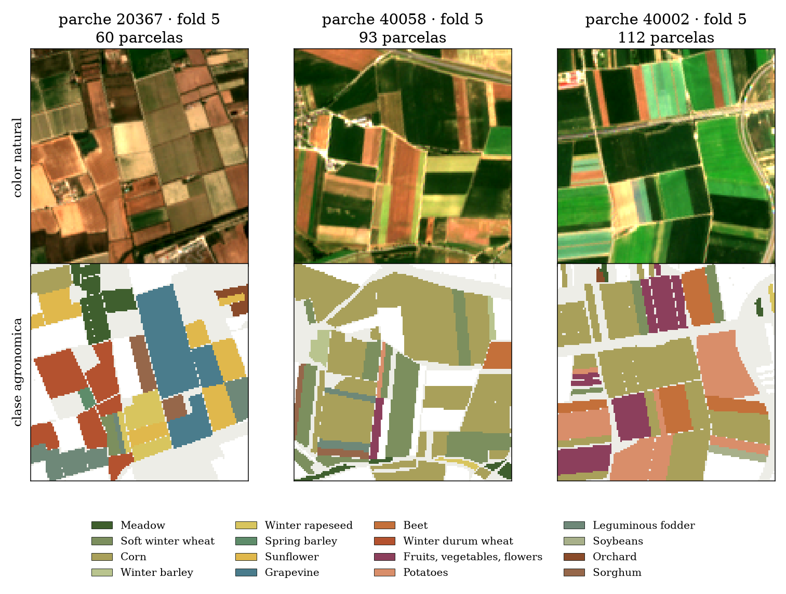
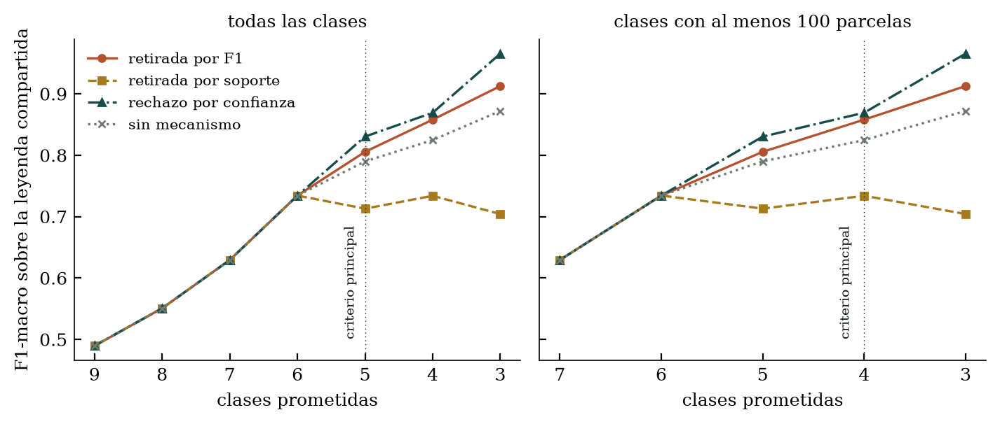
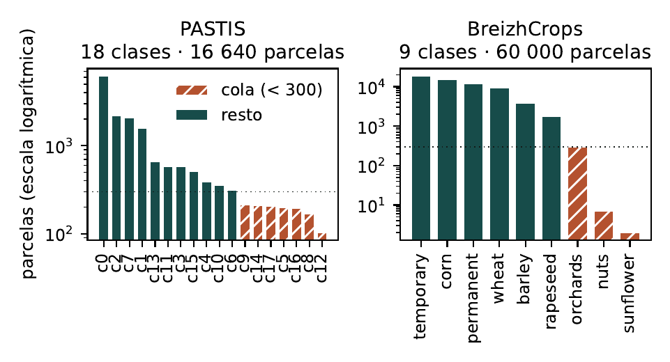
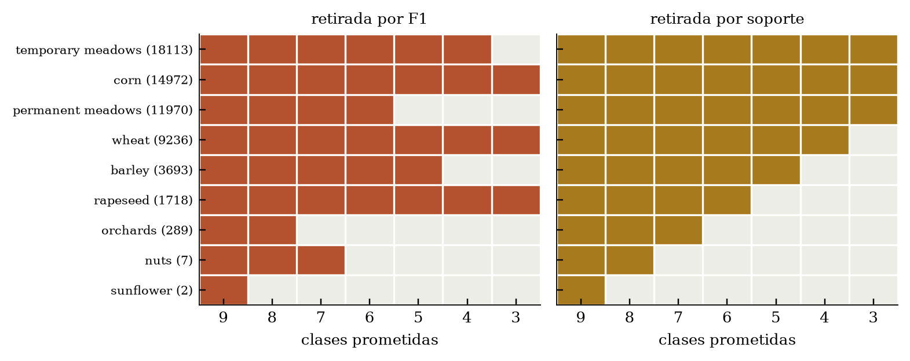
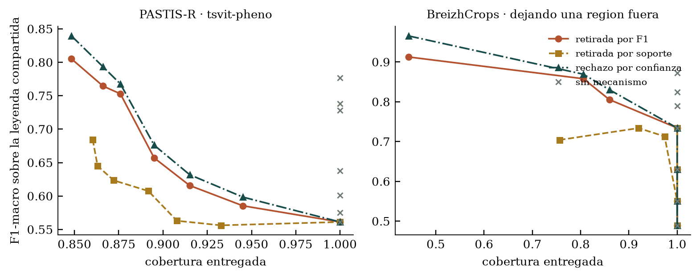
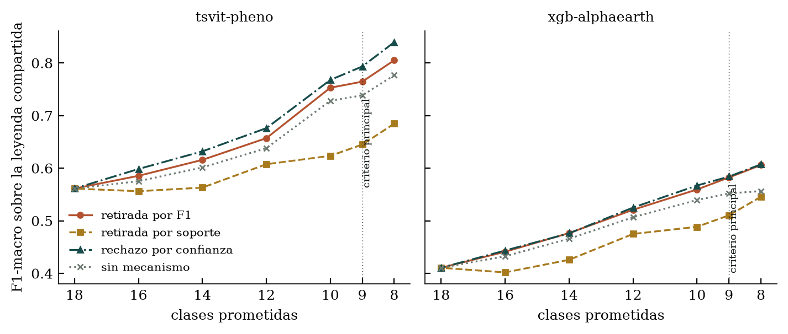
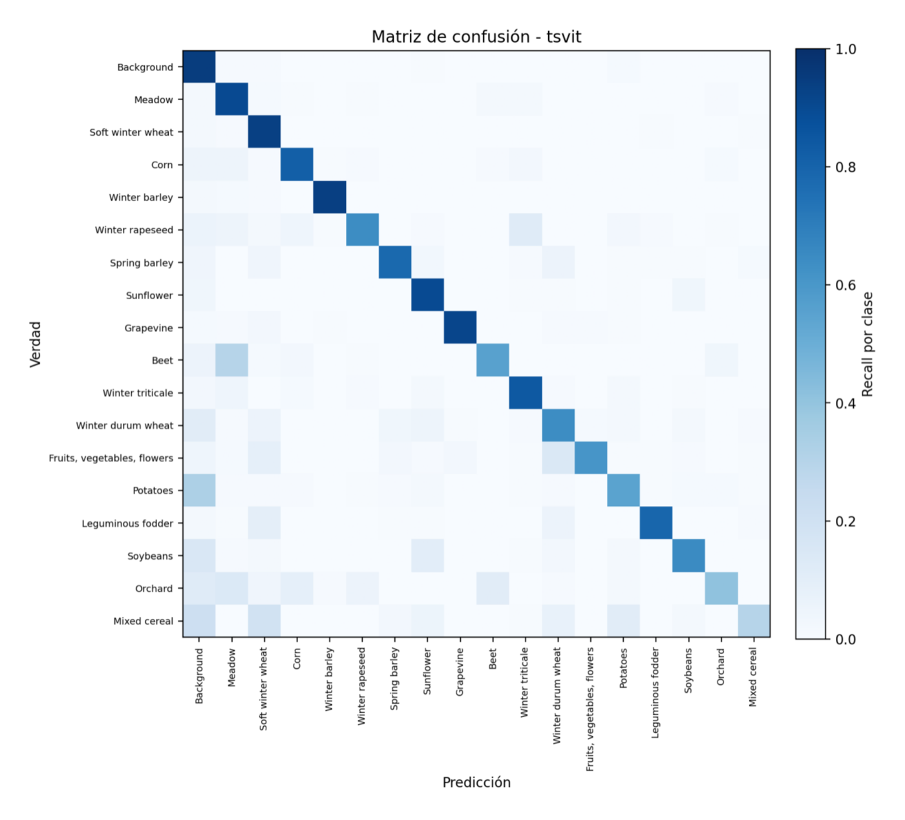
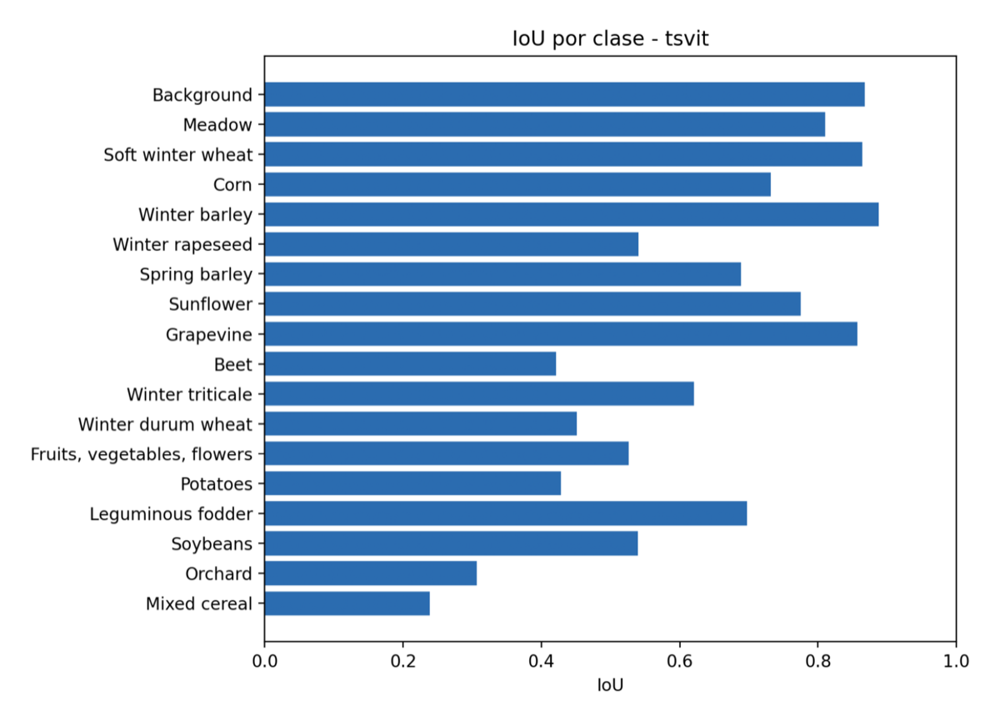

Cuaderno de trabajo · MICAI 2027
Un mapa de cultivos que no alcanza calidad puede prometer menos clases, responder menos parcelas, responder con un conjunto o retroceder a una clase más gruesa. El artículo no pregunta cuál acierta más, porque no son comparables por acierto. Pregunta cuál conviene a quién, y a costa de quién.
El plan nuevo, por épicas Borrador retirado · PDF
El borrador de quince páginas se publica retirado. Cuatro revisores a ciegas lo auditaron con criterios de MICAI y los cuatro recomendaron rechazo. Se deja accesible porque el registro de lo que salió mal vale más que el borrador.
AgroSatCopilot mapea qué se cultiva en cada parcela a partir de lo que los satélites ven a lo largo del año. Dieciocho clases agronómicas sobre Francia metropolitana, en un banco público.
Cada celda del mosaico es una parcela del fold 5, coloreada por su clase real. Cuatro clases se comen dos tercios del terreno; las seis últimas juntas no llegan al siete por ciento. Ese desequilibrio es el punto de partida de todo lo demás.
Cuando un mapa de cultivos no alcanza calidad suficiente, hay dos maneras de recortar lo que promete. Se puede prometer menos clases —retirar del catálogo las que el modelo no distingue— o se puede responder menos parcelas, abstenerse allí donde el modelo no está seguro. Son productos distintos y se eligen por intuición.
Corregido el 3 de septiembre. Aquí decíamos que este equipo «tomó la primera vía sin medirla» y que retiró seis clases porque «tenían muy poca muestra». Las dos cosas son falsas. El orden real de entrada de las clases lo decide el F1 por clase con umbral 0,90, y existe una columna que prueba que la cobertura sí se midió: 90,5 % con doce clases. El equipo usó el criterio bueno, y lo que no midió fue la comparación contra la alternativa.
La pregunta del artículo es cuál de esas salidas conviene y a quién le cuesta. Y hay una tercera para la que no encontramos trabajo en este dominio: devolver un conjunto de cultivos plausibles —«trigo o cebada»— en lugar de una etiqueta o de nada.
Lo que ya está medido y sobrevivió a la auditoría: en la clase 5, con 198 parcelas, el recorte atiende el 20,2 % y la abstención el 63,6 %; en la clase 12, con 103 parcelas, el 27,2 % frente al 62,1 %. Y el recorte entrega respuestas garantizadamente falsas para las clases que retiró; la abstención no entrega nada.
Arriba, lo que el satélite ve en color natural a principios de julio. Abajo, la etiqueta agronómica de cada parcela. El producto se entrega parcela a parcela, y el catálogo que estudia el artículo es la lista de nombres que la fila de abajo tiene permitido usar.

El borrador de quince páginas sigue retirado. Ocho rondas externas cerraron defectos de evaluación, custodia y redacción. US-173 cerró el primer contrato científico del estudio reencuadrado: estimando y población ya están fijados; quedan pérdida, margen práctico y criterio principal antes de firmar el preregistro. US-121 y US-118 están ahora en curso.
Estado de la conclusión. H1-2026 está pendiente: ni «se refutó» ni
«no replicó». Las cuatro cifras que sostenían ese veredicto están invalidadas y trece
artefactos permanecen OBSOLETO. Lo único que no depende de esas cifras es que la
regla de entrega cambió.
CUARENTENA. Esta página reproduce cifras derivadas de artefactos marcados
OBSOLETO en el registro de custodia: las produjo el módulo de evaluación cuando
aún tenía tres defectos —denominador móvil, punto de operación elegido dentro del bloque que
lo mide, y remuestreo a nivel de parcela—. Ninguna entra en el artículo hasta
regenerarlas. Se conservan sin retocar, con el apartado que las cita marcado, porque el
registro de lo que creímos importa tanto como lo que resulte. Un gate lo comprueba:
make paper-obsoletos-check.
Medidos sobre las mismas parcelas, con el mismo arnés y la misma métrica. Es la primera vez que el proyecto los compara así.
| Modelo | F1-macro | Exactitud |
|---|
El mejor miembro individual de esta tabla es tsvit-pheno, y ninguna de las cuatro
reglas de combinación lo mejora bajo un protocolo libre de fuga.
Retirado el 3 de septiembre. Aquí decíamos que «U-TAE rinde 0,19 donde la literatura le da alrededor de 0,63». La comparación es inválida: 0,19 es F1-macro por parcela y 0,63 es mIoU por píxel, que son métricas y niveles distintos. Lo señaló el coautor. Por qué ese checkpoint rinde tan por debajo de su propia validación es una pregunta abierta, y se responde midiendo mIoU contra mIoU, no citando la literatura de memoria.
Y una advertencia sobre toda esta tabla: tsvit-pheno-fullm aparece con
0,2552 y esa cifra es un bug del volcado, no un resultado. Corregido vale
0,7883, con lo que sería el mejor miembro y no el quinto. El arreglo no está en este
repositorio, así que la tabla se publica con el defecto señalado en vez de con la cifra
corregida que no podemos re-derivar aquí.
El 0,7486 que el proyecto publicó no es un held-out: el meta-modelo se reentrena sobre las mismas parcelas que luego puntúa. Precisión del 3 de septiembre: en el CSV había una columna libre de fuga, pero vale 0,536, no 0,6794. Ese 0,6794 es una re-derivación nuestra, agrupando posteriores en vez de promediar macros por bloque. Lo que existía al lado era otra cifra, con otro estimador y peor.
El resultado principal primero: cuánto de la mejora al recortar el catálogo es el mecanismo y cuánto es la división.
En el segundo banco, pasar de nueve clases a seis sube el F1-macro de 0,4895 a 0,7342. Los cuatro mecanismos dan exactamente la misma cifra en todo ese tramo, con cobertura 1,000. Girasol tiene dos parcelas de 60 000 y nueces siete: el modelo no las predice nunca, así que retirarlas no retira ninguna parcela de la entrega. Nadie hace nada y la métrica sube casi un cuarto de punto sola.

| Clases | F1 | Mejora aparente | Es el denominador | Cobertura |
|---|
Porque la cola de clases raras no es delgada, es degenerada. En el banco primario la clase menor tiene 103 parcelas; en el segundo tiene dos.

Retirar por soporte bajo —lo que este equipo hizo para desplegar— queda último en los dos bancos y además baja conforme se retiran más clases. La razón se ve en las leyendas: saca la colza, que el modelo separa bien, y conserva las dos praderas, que confunde entre sí. Optimiza el tamaño de la muestra, no la calidad de lo que se entrega.



Sobreviven a la auditoría porque describen predicciones en lugar de sostener una comparación.
Las dos vienen del volcado píxel a píxel sobre los 496 parches del fold 5 y llevan
diecinueve filas, no dieciocho: la evaluación densa incluye la clase Background,
que el universo por parcela del artículo deja fuera. Son de tsvit, la
variante base del mejor miembro.

La diagonal aguanta arriba y se deshace abajo. Winter barley, Grapevine y Soft winter wheat son casi bloques sólidos; Mixed cereal, la última fila, apenas tiene diagonal y su masa se reparte entre Background, Meadow y Soft winter wheat — es decir, se confunde justo con las clases grandes. Ese es el mecanismo que castiga al F1-macro: una clase rara mal predicha no baja casi nada la exactitud, porque son pocas parcelas, pero arrastra su sumando entero en un promedio por clase.

Corregido el 3 de septiembre. Aquí decíamos que esas cinco son «casi exactamente las que el equipo retiró». Es falso: de las cinco, solo dos —Mixed cereal y Potatoes— están entre las seis retiradas. Orchard, Beet y Winter durum wheat se conservaron. Lo que la figura muestra es por qué la tentación de retirar es fuerte, no que el equipo cediera a ella por IoU.
Una figura que no aparece aquí: los residuos espaciales del ensamble. Dibuja los 2 326 errores encima de los 14 314 aciertos, así que un catorce por ciento tapa al ochenta y seis y la imagen contradice su propio título. Está en la lista de cosas que hay que rehacer antes de que ninguna figura entre al artículo.
El borrador de quince páginas está retirado. Lo que sigue es qué lo tumbó y qué se escribe en su lugar.
Cuatro revisores a ciegas, cuatro rechazos, y apenas se solapan. Se les dio el manuscrito con ejes disjuntos —validez estadística, afirmación contra evidencia, novedad y cumplimiento editorial— sin nuestras conclusiones y sin la revisión del coautor. Los tres defectos estadísticos decisivos los reprodujimos después nosotros mismos.
El artículo denunciaba comparar sobre denominadores distintos y lo hacía: promediaba sobre las clases presentes en la entrega de cada brazo, y esos conjuntos difieren. En uno de los cinco bloques, igualar el denominador invierte el signo, de −0,0448 a +0,0160, y el contraste principal se encoge un 42 %.
El estimando es la media por bloque, pero el bootstrap remuestreaba parcelas dentro del bloque y nunca bloques. Sobre la unidad correcta, el intervalo del banco primario es (−0,0430, −0,0147) y excluye el cero; publicamos (−0,0414, +0,0080) y concluimos «no distinguible de cero». La unidad de remuestreo decidía el titular.
El rechazo por confianza elegía su umbral dentro del bloque donde se le medía; el recorte de leyenda elegía su catálogo fuera. El abstract afirmaba que el protocolo elige el punto de operación fuera de los datos que lo miden: cierto para un brazo, falso para el que gana.
El artículo repetía en seis sitios que retirar clases por soporte bajo es «lo que hace la práctica», y lo atribuía a este equipo. Es falso. El orden real de entrada de las clases lo decide el F1 por clase con umbral 0,90, y existe una columna que prueba que la cobertura sí se midió: 90,5 % en la curva del Stacking-5; el desplegado, Voting-3 v2, cubre el 88,3 %. El equipo usó el criterio bueno.
tecnologico nunca podía
coincidir con «Tecnológico». Tres de dieciséis tokens eran inertes, y la autoprueba pasaba
porque inyectaba el token tal cual: no podía detectar un token que no corresponde a la
realidad.Cuál conviene, y a costa de quién
Puntos de operación para mapeo de cultivos con desbalance extremo
Sede decidida: MICAI 2027, veinte páginas, y solo MICAI. Con ese tope no solo cabe la rejilla completa: cabe una sección de robustez de verdad, que es lo que separa un artículo que aguanta a un revisor estricto de uno que solo aguanta a un revisor amable. Lo que sigue sin caber es la autopsia de nuestros propios errores como primera contribución.
Cinco auditorías después, el plan se reescribió entero. La más incómoda devolvió una
aritmética simple: de 150 puntos planificados, solo 27 producían conocimiento nuevo. El 18 %.
El reparto actual se lee de make plan-check —hoy quince épicas, ochenta y
nueve historias, 376 puntos y 255 pendientes— y no se transcribe aquí: las dos veces que lo
transcribimos quedaron dos porcentajes incompatibles en esta misma página.
A igual coste, las cuatro maneras de prometer menos no se distinguen en
calidad y se distinguen muchísimo en quién paga
Y hay una región de costes donde cada una es la correcta
Esto es una hipótesis, no un resultado, y este encabezado decía lo contrario. Faltan tres cosas y ninguna es menor. «A igual coste» no significa nada todavía, porque no hay función de pérdida: la cardinalidad estuvo ocupando ese lugar sin justificación. «No se distinguen» no se deduce de no haber encontrado diferencia — ausencia de evidencia no es equivalencia, y hace falta una prueba de equivalencia contra una banda que salga del usuario y no del instrumento. Y «se distinguen en quién paga» tampoco está medido: ninguna de las cuatro medidas de disparidad declaradas tiene potencia con cinco bloques.
No por falta de trabajo: por falta de potencia. Al componer las dos correcciones de protocolo, que nunca se habían aplicado juntas, el contraste pasa de (−0,0430, −0,0147) con p = 0,005 a (−0,0410, +0,0077) con p = 0,130. Y con cinco bloques el efecto mínimo detectable es 0,033 con un contraste y 0,051 bajo corrección por multiplicidad, contra un efecto real de 0,017. Harían falta trece y veinte bloques. Hay cinco y dos.
Esto estuvo publicado aquí como el hallazgo que salvaba el artículo, y es falso por dos caminos distintos. La clase 10, con 355 parcelas, sí recibe 0,090 de cobertura bajo recorte y 0,741 bajo abstención — pero ocho es la mayor de dieciocho razones cuya mediana es 1,00, leída después de mirar la tabla, y no es monótona en soporte: la clase 8, más rara con 167 parcelas, recibe 0,958 bajo recorte. Y medida la potencia con cuatro medidas de disparidad declaradas antes de elegir, ninguna la tiene con cinco bloques: las cuatro incluyen el cero y necesitan entre doce y diecisiete.
Peor que el número era la frase que lo seguía: «el criterio principal se muda ahí, que es donde el diseño tiene potencia». Mudar el criterio principal a donde hay potencia es elegir el resultado antes de medirlo. La disparidad vuelve a ser una hipótesis por medir, y el criterio principal se fija en la firma del preregistro, uno solo y sin regla condicional.
El plan se entregó a un revisor ajeno al proyecto, con el encargo de responder a ciegas antes de leer una sola de nuestras conclusiones. Su veredicto fue no arrancar todavía, y tenía razón. Van ocho rondas, y cada una verificó a la anterior en el código en vez de creerse nuestra página de respuestas.
El módulo que escribimos multiplicaba la utilidad por la contención, así que el conjunto vacío caía a cero pasara lo que pasara y el precio de no responder no se podía elegir — justo lo que el docstring prometía como «la decisión ética del artículo». Comprobado con precios de 0, 10 y un millón: la cifra no se movía. Y nuestro test no podía detectarlo porque usaba el valor cero, el único que no distingue. Es el mismo modo de fallo que el gate de anonimato ciego a sus propios acentos, dos veces en un día.
Dos conjuntos del mismo tamaño reciben el mismo precio aunque uno sea agronómicamente inútil, y el silencio cuesta cero. El problema de decisión no tenía función de pérdida identificada y la cardinalidad ocupaba ese lugar sin justificación. Es la causa raíz del veredicto, y por eso hay una épica nueva delante de todas las demás.
Partir el mismo territorio más fino no crea observaciones independientes: los folds comparten entrenamiento con Jaccard medio de 0,4273 — y 0,6000 si se cuenta entrenamiento más validación, que es el número que publicamos aquí como si fuera el primero. La ganancia de potencia del barrido venía de cambiar la unidad, no de observar territorio nuevo. US-173 ya cerró esa mezcla: la inferencia será condicional a cada banco y no sostendrá afirmaciones de transporte.
Elegir la variable primaria «donde el diseño tenga potencia» es escoger el resultado antes de verlo, y estaba escrito en nuestro plan. Y la banda de equivalencia estaba anclada en el efecto mínimo detectable: así es el instrumento el que define qué cuenta como equivalente, cuando debería salir de la menor diferencia que le importa a quien usa el mapa.
Y una cifra cruzada dos veces, que es la lección más barata de la sesión. Atribuíamos
al sistema desplegado una cobertura de 0,9054, y esa cifra pertenece a la curva de otro
modelo. La corregimos a 14 688 de 16 640, o sea 0,88269 — y la segunda
auditoría externa encontró que esa tampoco es una cobertura. El filtro que produce
las 14 688 parcelas es if label not in kept: continue: descarta por la
etiqueta verdadera, así que 0,88269 es la cuota de soporte de la verdad en el
catálogo de doce — cuántas parcelas podrían puntuarse, no a cuántas responde el
sistema.
Se renombra a lo que es y la cobertura de entrega queda por medir, desde la regla que de verdad se desplegó y desde sus predicciones, no desde las etiquetas. Dos veces seguidas el error fue el mismo: una cifra correcta en su artefacto, colocada en un contexto que no es el suyo. Un número no es verdadero o falso por sí mismo — lo es respecto de la pregunta que dice responder.
Le devolvimos al mismo revisor la lista de lo que decíamos haber arreglado. En vez de leerla, fue al código. Dos de nuestros cierres eran falsos y aparecieron tres defectos nuevos. Esta es la parte cara de trabajar así, y es la que justifica todo lo demás.
La primera ronda encontró que el conjunto vacío valía cero pasara lo que pasara. Lo separamos
en un término aparte y lo dimos por cerrado, con dos tests de regresión. Pero la
implementación seguía evaluando g sobre todos los tamaños —ceros
incluidos— y descartando las columnas después. La firma promete que g solo ve
conjuntos no vacíos; una g legítima definida solo para tamaños positivos
reventaba igual.
Nuestros dos tests no podían verlo: comprobaban el número de salida, y el número era
correcto. El control que lo detecta es un espía —una g que registra qué
tamaños recibe y falla si recibe un cero—, y comprobamos que falla sobre la implementación
anterior antes de creerle. Es la tercera vez en esta sesión que un control nuestro no
podía detectar aquello para lo que existía.
La contribución del artículo es que casi toda la mejora al recortar la leyenda es el cambio de denominador. Y la regla que habíamos escrito para el preregistro —promediar solo sobre las clases con al menos veinte parcelas en ese bloque— hace que cada bloque estime una población de clases distinta. Es el mismo defecto que denunciamos, con otro disfraz, y dentro del documento que iba a firmarse.
Medido con cinco bloques: retienen 11, 13, 14, 13 y 10 clases; solo seis son comunes a los cinco; la unión son las dieciocho; el Jaccard mínimo entre dos universos es 0,400. US-173 cerró la elección: el universo común se fija exclusivamente desde entrenamiento y se comparte entre mecanismos y bloques. La alternativa clase×bloque quedó retirada para que no pueda elegirse después.
El criterio que fija el número de bloques se apoya en la separación entre una parcela de prueba y la más cercana de entrenamiento. Nuestro productor submuestreaba unos 300 puntos de cada lado antes de tomar el mínimo. Quitar candidatos solo puede mantener o subir un mínimo: el sesgo va siempre en la dirección que nos favorece, y el diseño parecía más separado de lo que está.
Con vecino más cercano exacto: k=5 baja de 23,505 a 22,972 km, k=8 de 2,877 a 1,975, la mediana de 133,489 a 122,056. El veredicto del criterio no cambia — pero lo que se publica es el número, no el veredicto.
La tabla de colchones del preregistro —cuatro filas con sus separaciones— no tenía productor ni artefacto: la habíamos escrito. Ahora son veinte combinaciones selladas, y los valores exactos no coinciden con los que la prosa decía. Con cinco bloques el colchón resulta irrelevante: las cuatro filas dan el mismo número, porque los bloques ya están a 23 km.
Y el solapamiento entre folds que publicábamos como «0,60 entre los entrenamientos» era el de entrenamiento más validación. Entre entrenamientos solos es 0,4273 de media y 0,5510 de máximo. Los dos números son ciertos y no son el mismo. Ahora el artefacto trae los dos con nombre propio — y la tendencia dice lo que importa: cuanto más se parte, más comparten los folds, hasta 0,92 con veinticinco bloques. Subdividir no produce réplicas: produce el mismo dato contado más veces.
Una historia del plan decía «sin dependencias» en su criterio de aceptación mientras declaraba cuatro en su campo de dependencias. Y el preregistro prohibía elegir el criterio principal según dónde hubiera potencia, y dos líneas después traía la regla «si la disparidad tiene potencia es el criterio principal; si no, el mapa».
Las dos están corregidas, y la primera además tiene ahora un gate que la comprueba en las ochenta y nueve historias. Probado rompiéndolo: inyectada la frase, falla; retirada, pasa. De paso encontró tres falsos positivos propios y hubo que acotarlo.
La ronda 3 encontró un patrón nuestro que no habíamos visto: arreglábamos el documento donde el auditor había puesto el dedo y dejábamos las otras apariciones intactas. El preregistro decía lo correcto y el plan seguía diciendo lo anterior — cuatro veces. La regla que faltaba la teníamos escrita desde el principio: agota el alcance del control.
Los tres defectos diagnosticados hacía semanas seguían en el código: el universo de clases del macro salía de las verdades de las parcelas entregadas —que dependen del mecanismo, así que el denominador se movía entre brazos—; el umbral del rechazo por confianza se elegía dentro del bloque que lo mide; y el intervalo remuestreaba parcelas, convirtiendo cinco bloques espaciales en dieciséis mil réplicas que no existen. La suite verde no decía nada de ese fichero porque no había un solo test sobre él.
Los tres están reparados, y cada reparación es un parámetro obligatorio: los tres habían sobrevivido como valores por defecto silenciosos, así que ahora no se puede llamar a ninguna de esas funciones sin declarar qué universo de clases, qué umbral y qué unidad de remuestreo. Ocho tests nuevos, dos de ellos comprobados fallando sobre la versión anterior. Y todo lo que ese módulo produjo queda marcado en el ledger como pendiente de regenerar.
El preregistro lo prohíbe desde la ronda 2. Pero una historia del plan seguía exigiendo, con todas sus letras, que «el criterio principal se mueve a una magnitud donde el diseño sí tenga potencia» — contradiciendo a la historia que promete fijarlo desde la pérdida. La potencia evalúa una variable elegida por la decisión sustantiva; no la elige.
La cabecera decía apuntar a un commit y el auditado era otro cuatro commits después. Y veinticuatro filas declaraban «sin seguimiento en git» archivos que sí estaban versionados — el auditor encontró tres a mano; el gate, al encenderlo, encontró veinticuatro. Pasaba porque solo miraba ruta, MD5 y estado.
Ahora comprueba procedencia: el commit de sellado tiene que existir y estar en la historia de HEAD, y quien dice no estar versionado tiene que ser cierto. El otro gate, el de dependencias contradictorias, solo leía dos campos y burlarlo era mover la frase al título: ahora recorre el objeto entero. Los dos están probados en negativo y versionados, que es la diferencia entre una prueba y el recuerdo de una prueba.
Decíamos que el catálogo bajó de 18 clases a 12 con «criterio F1 por clase ≥ 0,90». El código dice otra cosa: el catálogo de doce es el último cuyo macro-F1 restringido se mantiene sobre 0,90 al ir añadiendo clases en orden de calidad resuelta — 0,9001 con doce, por debajo con trece. No es un matiz: esa decisión real es el insumo de la tabla de pérdidas, y no puede entrar deformada.
El KD-tree eliminó el sesgo del submuestreo, pero el universo sellado guarda centroides: dos campos vecinos separados por un seto están tan lejos como sus centros. Es una cota superior de la separación real, y por sí sola no demuestra independencia — eso necesita un diagnóstico de autocorrelación que no está hecho. Renombrada en el artefacto y en los dos documentos que la citan, con esa limitación escrita.
Las tres reparaciones grandes de la ronda anterior eran correctas en lo que arreglaban y las tres tenían una rendija. Ese es el patrón de esta ronda, y es más incómodo que los anteriores porque no se ve mirando lo que se arregló: solo mirando lo que no.
Sacamos el umbral de confianza del bloque evaluado, lo dimos por cerrado y escribimos un test.
Pero la tasa objetivo del cuantil seguía siendo ref.delivered.mean(): la
cobertura que el otro mecanismo realizó en el bloque de prueba. La fuga era más
estrecha y era la misma fuga. El auditor lo demostró dejando el entrenamiento intacto y
cambiando solo la máscara de referencia: la entrega del comparador cambió.
Y nuestro test no podía verlo porque comprobaba un síntoma —que los recuentos no coincidieran siempre— en vez del mecanismo. Ahora la tasa es la fracción de parcelas de entrenamiento cuyo argmax cae en la leyenda, y el test es de invariancia: destrozar el bloque de prueba entero no mueve el umbral, y tocar el entrenamiento sí. Lo segundo importa tanto como lo primero: un test insensible a todo también pasa.
Nuestro propio protocolo dice que con dos bloques se reportan los dos deltas y nada más — ni intervalo, ni p, ni corrección por multiplicidad. BreizhCrops tiene exactamente dos regiones. El código calculaba el intervalo t, sacaba un p, y le aplicaba Holm, y de ahí salía el «Holm por debajo de 0,0001» que publicamos como transporte demostrado.
Por debajo de tres bloques definidos, la función ya no devuelve ni intervalo ni p, y los dos productores escriben el motivo en lugar del Holm que no corresponde.
Le añadimos la comprobación de procedencia y seguía siendo burlable: verificaba que los bytes de hoy coincidieran, no que el commit declarado los hubiera producido. El auditor puso el commit raíz, 467 atrás, como sello y el gate dijo OK; puso un commit inventado en una fila y también.
Ahora verifica el blob en el commit de cada fila —o el MD5 dentro de su puntero
.dvc— y exige que el sello no sea anterior a ninguna fila que sella. Al
encenderlo saltaron las diez filas que el auditor había predicho. Y la columna ya no se
rellena a mano: make paper-artifacts-seal la calcula desde git.
La rama de varianza cero del intervalo devolvía p = 1 y «no excluye el cero» para cualquier diferencia constante — incluida una constante de 0,1, que obviamente no contiene el cero. El único test de esa rama usaba cuatro ceros. Es exactamente el mismo modo de fallo que ya nos habían señalado en la utilidad de abstención, repetido dos semanas después por las mismas manos.
Separados los dos casos: todo cero es la autocomprobación del arnés; constante no nula da intervalo degenerado y p indefinido, porque sin varianza la t no existe y no se inventa. Y lo indefinido pasa a ser NaN en vez de 0,0, que es un cero con pinta de medida.
El ledger avisaba en su cabecera de que los productos del módulo defectuoso eran
exploratorios, y a la vez sus filas decían SELLADO y el gate terminaba con «84
artefactos sellados, OK». Aviso en prosa contra estado ejecutable: gana el estado. Por eso una
de esas cifras acabó en este cuaderno presentada como el experimento corregido.
Ahora existe el estado OBSOLETO: trece filas verificadas igual, contadas
aparte y con aviso explícito de que no entran en el artículo. Y los apartados de este cuaderno
que las citaban están tachados arriba, con el texto original a la vista.
De las tres reparaciones de la ronda anterior, dos tenían el mismo tipo de agujero que arreglaban. Eso ya no es mala suerte. Arreglábamos el ejemplo que nos habían enseñado y no la clase a la que pertenecía, así que el defecto sobrevivía a un metro de distancia.
Pusimos un mínimo de tres bloques para no publicar intervalos que el diseño no sostiene. El auditor pasó tres puntos que decían ser todos el bloque 0 y obtuvo n = 3, intervalo y p = 0,118. El control contaba elementos, no bloques — que es exactamente el error que el mínimo existía para impedir, un nivel más abajo.
Ahora la función rechaza bloques repetidos y brazos que no estén pareados por
(k, bloque). Un intervalo pareado sobre brazos no pareados no es pareado.
Hicimos que lo indefinido fuera NaN en vez de un cero con pinta de medida. Pero el delta seguía restando dos medias calculadas sobre poblaciones distintas —cada brazo con los bloques donde él estaba definido— mientras el intervalo usaba solo los pares completos. En el caso del auditor: delta 0,175 publicado, intervalo centrado en 0,2333.
Y nuestro test no podía verlo porque su brazo derecho valía siempre 0,5, y con un brazo constante las dos fórmulas coinciden. El test nuevo exige explícitamente que el caso distinga las dos fórmulas antes de comprobar nada.
Marcamos trece artefactos como OBSOLETO y el gate los contaba, imprimía un aviso
y devolvía éxito. Mientras tanto, ocho documentos activos seguían citando esas cifras
como vigentes. Ya nos había pasado con el aviso en la cabecera del ledger: prosa contra estado
ejecutable, gana el estado.
Existe ahora make paper-obsoletos-check, un gate de publicación: un documento
que cite cifras obsoletas lleva marca de cuarentena o falla, y uno que nombre una ruta
obsoleta sin estar declarado también. Los ocho la llevan.
Cinco rondas diciendo que todo espera a la tabla de pérdidas — y su criterio de aceptación permitía justificar cada precio «con una fuente citable o declarado explícitamente como supuesto del artículo». Esa segunda mitad vaciaba la historia entera: se podía cerrar inventando los precios con buena letra.
Eliminada. Ahora exige protocolo de elicitación escrito antes, al menos tres informantes de cada uno de los dos grupos afectados, respuestas crudas guardadas, síntesis trazable celda por celda, y publicar el desacuerdo cuando lo haya en vez de promediarlo en silencio. Un precio que nadie de fuera del equipo haya dicho en voz alta no entra en la tabla.
Las cinco reparaciones anteriores quedaron confirmadas. Lo que quedó fue una reserva sobre el gate de publicación recién nacido, y era buena.
Cuando un documento usa una cifra obsoleta no escribe el nombre del archivo del que salió: escribe el número. El gate buscaba lo primero. El auditor lo demostró señalando una cifra copiada al preregistro, sin nombrar el artefacto, con el gate en verde.
Ahora las cifras se extraen de los propios artefactos obsoletos —más de mil valores de cuatro decimales, que son los que no aparecen por casualidad— y se buscan en todos los documentos. Al encenderlo saltaron cinco documentos que la búsqueda por ruta no veía. Y al extenderlo al cuaderno público, veintidós cifras más, en esta misma página.
Su frontera, dicha antes de que nadie la encuentre: no detecta redondeos ni paráfrasis. Una cifra escrita con menos decimales al citarla se le escapa, y bajar el umbral llenaría el control de coincidencias. Cubre la copia literal, y eso es lo que promete.
Anclaba una expectativa en el efecto mínimo detectable que salió del módulo defectuoso. Un preregistro que ancla una expectativa en una cifra invalidada la está preregistrando. Retirada: se recalcula y se acepta lo que salga. Y las cuatro cifras de su enmienda quedan marcadas como pendientes de recalcular antes de la firma.
De paso, «se había refutado» sobrevivía en el propio preregistro y aquí, mientras el mismo preregistro lo prohíbe en su apartado 7. Corregido en los tres sitios que quedaban, dejando dicho en cada uno qué decía antes.
Escribimos, en el mismo documento y con dos líneas de distancia, que el veredicto sobre nuestra hipótesis era «no replicó» y que las cuatro cifras que sostienen ese veredicto están invalidadas y pendientes de recalcular. Las dos frases no pueden ser ciertas a la vez.
Habíamos aprendido a retirar la cifra y no a preguntar qué afirmaciones caen con ella. Es la misma operación que el artículo denuncia en otros, hecha por nosotros seis rondas seguidas. El veredicto queda PENDIENTE: ni «se refutó» ni «no replicó», y puede salir en cualquiera de los dos sentidos cuando se recalcule. Lo único que se declara sin depender de ninguna cifra es que la regla de entrega cambió.
Las revisiones que nos envían no se editan: marcarlas con cuarentena sería reescribir lo que alguien nos escribió, y el registro vale por ser textual. La decisión es correcta y no cambia. Pero la implementábamos eximiendo la carpeta, y eso vuelve invisible cualquier archivo nuevo que se deje allí.
Ahora es una lista cerrada con el sello de cada documento. Un fichero colado en la carpeta ya no es invisible, y un documento recibido que cambie de bytes rompe el gate —que es justo lo que la exención prometía: que no se toca.
Un revisor estricto de MICAI no va a discutir el mapeo de cultivos: va a buscar el punto donde el resultado se cae. Diez ataques inventariados, cada uno convertido en un experimento que se corre antes de escribir. Lo que sobreviva va al artículo; lo que no, cambia la afirmación.
| El ataque, tal como lo escribiría | La prueba que lo desactiva |
|---|---|
| «En vez de todo esto, entrenen un clasificador mejor» | La ganancia de cada mecanismo frente a la de cambiar de modelo, en el mismo eje de coste |
| «Su confianza y su conforme suponen posteriores calibradas, y no enseñan ni un diagrama de fiabilidad» | Calibración por clase, y cobertura condicional del conforme, que es la que dice algo del reparto |
| «Todo corre con la semilla 42 y un submuestreo que eligieron ustedes» | Diez semillas sobre todo el pipeline; si una conclusión depende de la semilla, se retira |
| «Su disparidad es la definición de su mecanismo, no un hallazgo» | Descomponerla en la parte implicada analíticamente y la que no, y declarar cuál es cuál |
| «El 1,62 % de celdas imputadas toca al 63 % de las parcelas» | Repetir sobre las parcelas sin ninguna celda imputada, y reportar la fracción de parcelas |
| «Eligieron el punto de operación que les conviene» | La curva completa, con el punto preregistrado marcado, y el rango en vez del máximo |
| «Su punto de operación se elige en un año y se aplica en otro» | Elegirlo en un año y evaluarlo en otro, o declarar la limitación con nombre |
| «Su colchón de un kilómetro es arbitrario y sus bloques filtran» | Varios colchones, con la distancia mínima real entre prueba y entrenamiento por bloque |
| «Las declaraciones de cultivo tienen error conocido: su disparidad puede ser ruido» | Inyección de ruido a tasas documentadas, y a qué tasa deja de sostenerse |
| «¿Por qué estos cuatro mecanismos?» | Situarlos en el retículo de predictores con valores de conjunto, y nombrar los que quedan fuera |
Y se cerraron tres escotillas. El plan tenía una salida en forma de protocolo para cada desenlace: «si no sobrevive a la simetría, se dice», «si no se transporta, el artículo gana un matiz», «si no replica, la contribución pasa a ser el protocolo». Un plan con una escotilla para cada desenlace aterriza en la escotilla. Queda escrito: el protocolo no puede ser el resultado de reserva. Si el experimento central no da nada, se va a revista y se espera al año siguiente.
Un barrido de 2024 a 2026 estrechó el hueco, y eso es bueno: uno preciso se defiende y uno amplio se tumba. Verificamos cada DOI contra Crossref y arXiv por nuestra cuenta, no solo por el barrido.
Rey et al. 2025 excluyen píxeles por umbral de incertidumbre sobre PASTIS, con U-TAE, UNET3D y TSViT — nuestro banco y nuestras arquitecturas. Lo decisivo es cómo: en todo el trabajo no aparecen «abstention», «selective classification» ni «risk-coverage». Es abstención de facto, sin marco, sin curva riesgo-cobertura y sin preguntar quién paga.
Ghassemi et al. 2025 ya tratan el tamaño del catálogo como variable de diseño medida: de las 52 clases de LUCAS 2022 concluyen que 26 equilibran exactitud y detalle. En cobertura del suelo general, sin marco de abstención y sin contabilidad de quién pierde.
La jerarquía normativa está montada y validada —HCAT4, EuroCrops v2.0 con 47 millones de parcelas— pero solo se usa como supervisión, nunca como opción de repliegue. El rechazo existe, pero por novedad. Y lo conforme llega a cobertura del suelo, no a tipo de cultivo por parcela desde series temporales. El único trabajo de observación de la Tierra que dice «abstain», SHRUG-FM en EarthVision 2026, evalúa incendios, inundaciones y deslizamientos: ninguna tarea agrícola.
La contribución, reformulada: no es el mecanismo, es la contabilidad. Medir, para cada mecanismo, qué cultivos y qué tamaños de parcela absorben la promesa retirada.
Y una regla de redacción que sale de aquí. Las búsquedas negativas tienen un sesgo declarado: OpenAlex carece de resumen para buena parte de Elsevier e IEEE, así que un cero suyo infravalora. En el artículo se escribe «no encontramos trabajo que…», nunca «nadie ha…». Un revisor con un contraejemplo tumba una afirmación absoluta, y no la tumbaría dos veces.
Con partición espacial ajena, no construida por nosotros, que es justo lo que un revisor cuestionaría si la inventáramos.
Lo que el reencuadre exige, y no es poco: los cuatro bancos, varios predictores por banco, líneas base de la literatura de verdad, y un preregistro nuevo escrito antes de correr nada. Está desglosado en las épicas 18 a 27 del plan ejecutable.
Aquí solo quedan hallazgos vigentes. Los defectos ya reparados salieron de esta lista: su historia permanece en el repositorio, pero no compite con lo que todavía impide ejecutar el estudio.
Comparar retirada, abstención, conjuntos y retroceso exige una tabla L(resultado verdadero, acción, afectado). El criterio ya no permite inventar precios como «supuesto del artículo», pero la tabla aún no se ha obtenido. Debe salir de un protocolo previo y de usuarios reales: al menos tres personas de control de subvenciones y tres de asesoría agronómica, con respuestas crudas y trazabilidad hasta cada celda.
Hasta entonces no hay moneda común y no se corre el experimento.
H1-2026 está pendiente. Retirar sus cuatro cifras invalidó también el veredicto que dependía de ellas. Puede salir en cualquiera de los dos sentidos al regenerar. Decir ahora «se refutó» o «no replicó» sería dejar la conclusión en pie después de retirar su evidencia.
Quedan tres parámetros abiertos: función de pérdida, margen práctico y criterio principal. El estimando y su población ya no forman parte de esta lista.
El margen de equivalencia debe derivarse de la pérdida expresada por los usuarios, no del efecto mínimo detectable. Después hay que declarar si se explora el símplex completo de tres razones libres o una sección justificada antes de mirar resultados.
Los trece artefactos marcados OBSOLETO siguen sellados como registro, pero no son
citables. Se regeneran solo después de cerrar US-172 a US-175 y firmar el preregistro; ninguna
cifra antigua se traslada al artículo por continuidad narrativa.
El MDE continúa aproximado con una t central; la multiplicidad de toda la superficie de costes no está implementada; y la selección de predictores todavía usa datos de evaluación. Son trabajo posterior al preregistro, no resultados disponibles.
La inferencia es condicional a cada banco, sobre todas las parcelas elegibles de prueba,
incluida la no entrega. La parcela es la unidad observacional y patch_id el
clúster; no se promedian bancos ni se afirma transporte. El punto de operación sale de
entrenamiento y validación y un gate impide que el contrato y el preregistro diverjan.
El punto de operación completo sale de entrenamiento y es invariante al bloque de prueba;
los intervalos exigen tres bloques únicos y brazos pareados; lo indefinido se conserva como
NaN; la custodia verifica el blob histórico; y OBSOLETO impide publicar sus cifras,
también en documentos nuevos y en el cuaderno. Las revisiones recibidas solo se exceptúan por
una lista cerrada con MD5.
Camino de continuación actualizado. US-173 está cerrado; el trabajo autónomo avanza por alcance, arnés OOF y bibliografía sin calcular contrastes del experimento central.
No se produce ningún contraste nuevo de las EPIC 20, 21, 22 ni 25 antes de firmar el preregistro. Mientras tanto sí avanzan US-121, US-118, US-141 y US-142; ninguna permite escoger pérdida, margen, criterio o sección de costes mirando resultados.